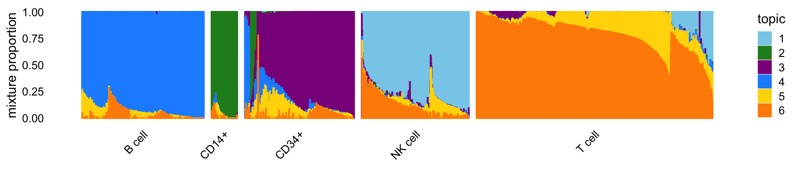
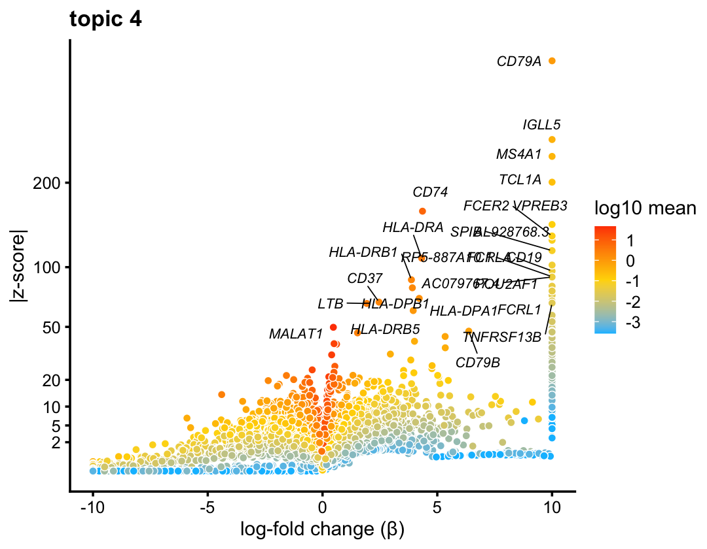
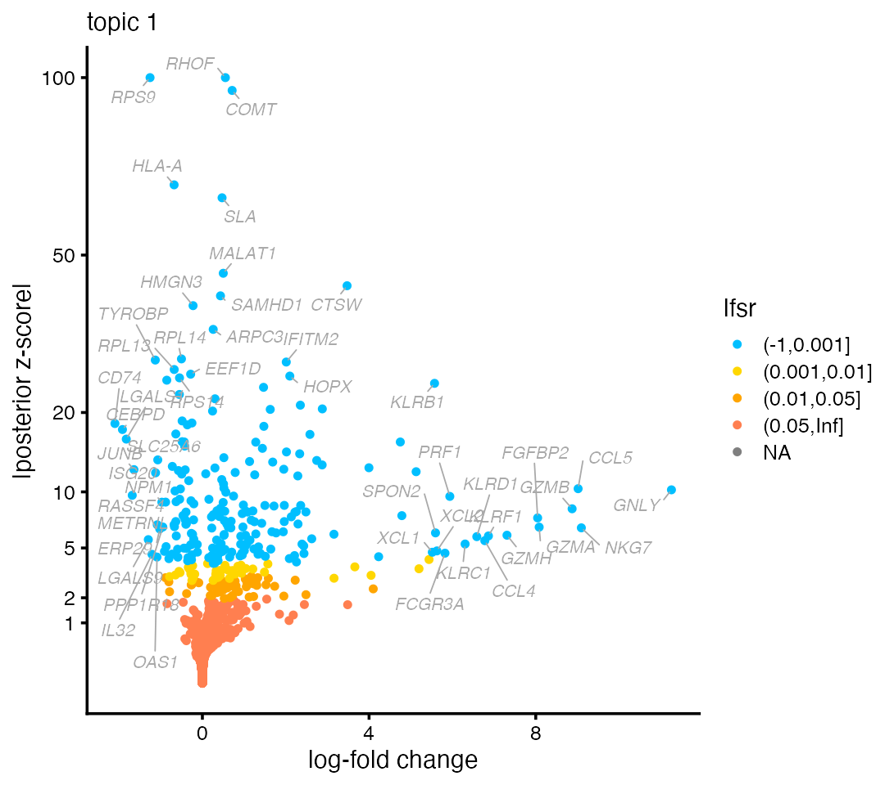

vignettes/single_cell_rnaseq_basic.Rmd
single_cell_rnaseq_basic.RmdThe aim of this vignette is to introduce the basic concepts behind an analysis of single-cell RNA-seq data using a topic model.
We begin our analysis by loading the packages. Then we set the seed so that the results can be reproduced.
We will illustrate the concepts using a single-cell RNA-seq data set from Zheng et al (2017). These data are reference transcriptome profiles from 10 bead-enriched subpopulations of peripheral blood mononuclear cells (PBMCs). The original data set is much larger—for this introduction, we have taken a small subset of approximately 3,700 cells.
The data we will analyze are the unique molecular identifier (UMI) counts. These data are stored as an \(n \times m\) sparse matrix, where \(n\) is the number of cells and \(m\) is the number of genes:
The UMI count data are expected to be “sparse”—that is, most of the counts are expected to be zero. Indeed, over 95% of the UMI counts are zero:
mean(counts > 0) # [1] 0.04265257
Most analyses single-cell RNA-seq data involve a pre-processing step in which the UMI counts are log-transformed and normalized. When analyzing UMI counts with a topic model, you should not normalize or transform the counts. In particular:
There is no need to log-transform the UMI counts because the counts are modeled directly using the multinomial distribution.
There is no need to normalize the counts in each cell by sequencing coverage because the multinomial is conditioned on the cell’s total UMI count.
Additionally, any analyses select only the most highly variable genes. We recommend instead using all genes. The only exception are genes in which all the UMI counts are zero—these genes should be removed prior to a topic model analysis.
Since no pre-processing is needed, we can move directly to the next step of the analysis: fitting the topic model to the UMI count data. This is accomplished by a single call to fit_topic_model:
fit <- fit_topic_model(counts,k = 6)
This is typically the most computationally burdensome step—it may take several minutes to run fit_topic_model on this data set. For convenience, we saved the output from this call:
fit <- pbmc_4k$fit
To fit a topic model, we must specify \(K\), the number of topics. Here, we have chosen \(K = 6\) topics. In most settings, a good choice of \(K\) will not be known in advance, so you will you want to explore the results from topic models at different settings of \(K\).
There are several complexities to topic model fitting—we do not elaborate on these complexities here. The fit_topic_model interface is intended to hide most of these complexities, and it should work well for a wide range of data sets. However, larger or more challenging data sets my require some fine-tuning of the model fitting. Model fitting is covered in more detail in a separate vignette.
A key feature of the topic model is that each cell \(i\) is represented as a unique mixture of the topics. Therefore, each cell can be summarized from the \(K\) mixture proportions. This cell-specific mixture is learned from the data. In fastTopics, the mixture proportions for all cells are stored as an \(n \times K\) matrix:
dim(fit$L) # [1] 3774 6
To illustrate, here is a cell in which the pattern of expression is almost fully captured by the fourth topic:
rows <- "GATATATGTCAGTG-1-b_cells" round(fit$L[rows,],digits = 3) # k1 k2 k3 k4 k5 k6 # 0.000 0.000 0.000 0.985 0.015 0.000
Here are two more examples:
rows <- c("GACAGTACCTGTGA-1-memory_t", "TGAAGCACACAGCT-1-b_cells") round(fit$L[rows,],digits = 3) # k1 k2 k3 k4 k5 k6 # GACAGTACCTGTGA-1-memory_t 0 0.002 0.002 0.000 0.087 0.909 # TGAAGCACACAGCT-1-b_cells 0 0.000 0.058 0.657 0.000 0.285
The third example is interesting because the observed expression is best captured by a mixture of topics 4 and 6.
To make sense of these results, we first need to understand the biological relevance of the topics. We turn to this question next.
In some cases, you may have additional information about the cells, such as the tissue the cells were sampled from. In the PBMC data, the cells were labeled using fluorescence-activated cell sorting (FACS). Each cell is assigned one of five labels (each corresponding to a cell type): B cells, CD14+ monocytes, CD34+ cells, natural killer (NK) cells, and T cells.
samples <- pbmc_4k$samples summary(samples$subpop) # B cell CD14+ CD34+ NK cell T cell # 767 163 687 673 1484
To visualize the relationship between the cell labels and the mixture proportions, we create a Structure plot:
topic_colors <- c("skyblue","forestgreen","darkmagenta","dodgerblue", "gold","darkorange") p1 <- structure_plot(fit,topics = 1:6,colors = topic_colors, grouping = samples$subpop,gap = 25) print(p1)

The Structure plot is a simply stacked bar chart, in which each topic is represented as a bar of a different colour. Being proportions, the mixture proportions for each cell must sum to 1, so the total height of the bars is the same for all cells, which makes it easier to compare across cells. Patterns begin to emerge when the cells are arranged so that cells with similar mixture proportions are positioned close to each other. This arrangement is automated in structure_plot.
From this Structure plot, it is evident that topics 1 (lighter blue), 2 (green) and 4 (darker blue) closely correspond to the NK, CD14+ and B cell types, respectively; the expression in these cells is largely explained by a single topic. NK cells show more heterogeneity in expression than the CD14+ and B cells.
The mixture proportions uncover some surprises in the cells labeled as “CD34+”: while their expression is largely explained by topic 3 (purple), some cells appear to be mislabeled—they should have been labeled as B cells or CD14+ cells. Other cells are best fit by a mixture of several topics.
Finally, the topic model captures interesting substructure within the T cells. Two patterns stand out from the Structure plot: first, most T cells are a mixture of two topics, 5 (yellow) and 6 (orange), with wide variation in the mixing proportions for these two topics; second, there is a distinctive subset of T cells that is represented as a mixture of three topics (topics 1, 5 and 6). To help us understand what aspects of T cell diversity are captured by these topics, we need to first understand how topics capture shared patterns of gene expression.
Above, we explained that the topic model represents cells as mixtures of topics. In our running example, some of the topics seem to have a straightforward interpretation as known cell types. More precisely, each topic captures an expression pattern, encoded as a vector of \(m\) relative expression levels (\(m\) is the number of genes). In fastTopics, the relative expression levels for all topics are stored as an \(m \times K\) matrix:
dim(fit$F) # [1] 16791 6
Because the expression patterns are encoded by relative expression levels, the estimates of relative expression are directly comparable across topics. For example, gene CD79B is an important component of B cell differentiation, so we would expect higher expression in B cells. Indeed, this is what we find in the topic 4 (we multiplied the estimates by \(10^6\) only to make them easier to read):
genes <- pbmc_4k$genes j <- which(genes$symbol == "CD79B") round(1e6 * fit$F[j,]) # k1 k2 k3 k4 k5 k6 # 40 0 0 2135 199 0
Expression of CD79A—a known marker gene for B cells—provides an even stronger clue, as it is uniquely expressed in topic 4:
By contrast, genes that are highly expressed in all topics, e.g., COX4I1, provide little useful information:
j <- which(genes$symbol == "COX4I1") round(1e6 * fit$F[j,]) # k1 k2 k3 k4 k5 k6 # 1231 3535 1444 1759 1158 2104
The larger point here is that the most informative genes are the genes with higher expression in one topic compared to the other topics (and more generally, genes with large differences in gene expression). This idea of analyzing differences in gene expression analysis is an old idea. The next section explains how differential expression analysis is performed using the topic model.
To set the stage for differential expression analysis using a topic model, we begin with a classic differential expression analysis using the available cell-type labels. This analysis centers on calculation of the log-fold change statistic. For a given group or cluster, the log-fold change is defined as the (base-2) log-ratio of two expectations: the mean expression (i.e., mean UMI count) for all cells belonging to the specifed group over the mean expression among cells not belonging to the group. For example, genes CD79A and CD79B are overexpressed in B cells, by a factor of \(2^5 = 32\) times, or more; by contrast these two genes are underexpressed in the other four cell types:
out1 <- diff_count_clusters(counts,samples$subpop) rbind(out1$beta[genes$symbol == "CD79A",], out1$beta[genes$symbol == "CD79B",]) # Fitting 16791 x 5 = 83955 univariate Poisson models. # Computing log-fold change statistics. # B cell CD14+ CD34+ NK cell T cell # [1,] 5.660683 -38.760789 -2.821295 -7.27204 -4.622270 # [2,] 4.937896 -4.212397 -2.619102 -2.87545 -3.467037
fastTopics extends the classic differential expression analysis to allow for partial membership to groups. This generalized differential expression analysis is implemented in diff_count_analysis:
out2 <- diff_count_analysis(fit,counts) # Fitting 16791 x 6 = 100746 univariate Poisson models. # Computing log-fold change statistics.
As in the standard analysis, it outputs estimates of log-fold change:
rbind(out2$beta[genes$symbol == "CD79A",], out2$beta[genes$symbol == "CD79B",]) # k1 k2 k3 k4 k5 k6 # [1,] -21.62260 -19.68814 -17.40304 10.000000 -13.18267 -16.11677 # [2,] -11.24225 -13.99581 -15.04179 6.372537 -12.24970 -15.88001
These log-fold change statistics have the same interpretation (the standard log-fold change emerges as a special case when the all mixture proportions are 0 or 1). The log-fold change estimates are noticeably larger in the B cells topic (topic 4), particularly so for CD79A. In fact, CD79A is uniquely expressed in topic 4, so the ratio essentially has a zero denominator; to ensure finite calculations, by convention a log-fold change statistic of 10 means “10 or larger”. (This convention can be overriden in diff_count_analysis by choosing a different setting for betamax.)
Up to this point, we have illustrated the differential expression analysis with known genes such as CD79A. Ultimately, we would like to discover genes relevant to a topic (of known or unknown biological relevance).
To discover genes, a natural thing to do would be to rank candidates by their log-fold change. The complication is that lowly expressed genes could also produce, by chance, large log-fold changes, and we would not want to rank these genes highly. The volcano plot balances these two concerns: the log-fold change is shown on the x-axis, and the p-value or z-score, quantifying support for differential expression, is shown on the y-axis:
p2 <- volcano_plot(out2,k = 4,label_above_quantile = 0.998, labels = genes$symbol,max.overlaps = 15) print(p2)

Typically the most interesting genes are found in the top-right portion of the volcano plot—that is, genes with large log-fold change and strong support. Indeed, B-cell genes, among them CD79A, CD79B and CD19, are near top-right corner of the volcano plot.
Likewise, natural killer genes such as NKG7 emerge at the top of the volcano plot for topic 1:
p3 <- volcano_plot(out2,k = 1,label_above_quantile = 0.998, labels = genes$symbol,max.overlaps = 15) print(p3)

Interpreting the topics that capture variation within the T cells is a little more complicated, so we defer this investigation to Part 2.
This is the version of R and the packages that were used to generate these results.
sessionInfo() # R version 3.6.2 (2019-12-12) # Platform: x86_64-apple-darwin15.6.0 (64-bit) # Running under: macOS Catalina 10.15.7 # # Matrix products: default # BLAS: /Library/Frameworks/R.framework/Versions/3.6/Resources/lib/libRblas.0.dylib # LAPACK: /Library/Frameworks/R.framework/Versions/3.6/Resources/lib/libRlapack.dylib # # locale: # [1] en_US.UTF-8/en_US.UTF-8/en_US.UTF-8/C/en_US.UTF-8/en_US.UTF-8 # # attached base packages: # [1] stats graphics grDevices utils datasets methods base # # other attached packages: # [1] cowplot_1.0.0 ggplot2_3.3.0 fastTopics_0.4-11 Matrix_1.2-18 # # loaded via a namespace (and not attached): # [1] progress_1.2.2 tidyselect_0.2.5 xfun_0.11 purrr_0.3.3 # [5] lattice_0.20-38 vctrs_0.2.1 colorspace_1.4-1 viridisLite_0.3.0 # [9] htmltools_0.4.0 yaml_2.2.0 MCMCpack_1.4-5 plotly_4.9.2 # [13] rlang_0.4.5 pkgdown_1.5.1 pillar_1.4.3 withr_2.1.2 # [17] glue_1.3.1 lifecycle_0.1.0 stringr_1.4.0 MatrixModels_0.4-1 # [21] munsell_0.5.0 gtable_0.3.0 htmlwidgets_1.5.1 coda_0.19-3 # [25] memoise_1.1.0 evaluate_0.14 labeling_0.3 knitr_1.26 # [29] SparseM_1.78 quantreg_5.54 irlba_2.3.3 Rcpp_1.0.5 # [33] scales_1.1.0 backports_1.1.5 desc_1.2.0 RcppParallel_4.4.2 # [37] jsonlite_1.6 farver_2.0.1 fs_1.3.1 mcmc_0.9-6 # [41] hms_0.5.2 digest_0.6.23 stringi_1.4.3 Rtsne_0.15 # [45] dplyr_0.8.3 ggrepel_0.9.0 grid_3.6.2 rprojroot_1.3-2 # [49] quadprog_1.5-8 tools_3.6.2 magrittr_1.5 lazyeval_0.2.2 # [53] tibble_2.1.3 zeallot_0.1.0 tidyr_1.0.0 crayon_1.3.4 # [57] pkgconfig_2.0.3 MASS_7.3-51.4 prettyunits_1.1.1 data.table_1.12.8 # [61] assertthat_0.2.1 rmarkdown_2.3 httr_1.4.2 R6_2.4.1 # [65] compiler_3.6.2